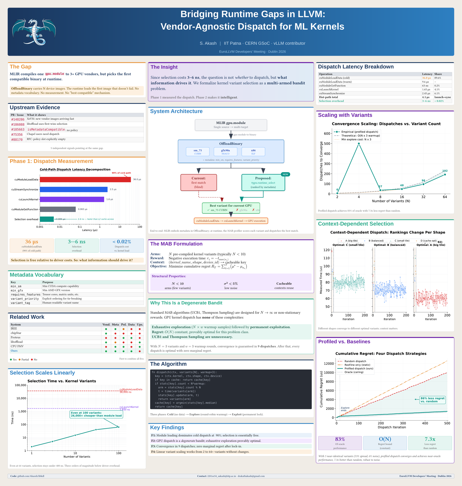

In April I flew to Dublin to present a poster at the 2026 EuroLLVM Developers' Meeting, supported by an LLVM Foundation student travel grant. My first LLVM meeting, my first time in Ireland, and a poster arguing one very specific thing: when LLVM's offloading runtime has several GPU binaries to choose from, it loads the first one that works, and it should load the best one instead. This post is the poster, the argument, and the trip.

The gap
MLIR will happily compile one gpu.module for three or more GPU vendors at once: gpu-module-to-binary packs a CUBIN for NVIDIA, an HSACO for AMD, and a host fallback into a single OffloadBinary. Which is lovely, right up to the moment the program runs. At runtime the loader walks the images and picks the first one that does not fail. There is no metadata vocabulary to describe what each variant needs, no measurement of how the variants actually perform, and no mechanism for "best compatible" at all. First-wins, blind.
If you read my C++26 reflection post, this is the same disease seen from the compiler side: we are good at producing many specialized variants of a kernel, and bad at deciding between them at the moment it matters.
Measure before you fix
Phase 1 of the work was refusing to guess. I profiled what dispatch actually costs on the CUDA driver path, and the breakdown is lopsided: a cold cuModuleLoadData is about 36 μs, roughly 90% of the cold path, while actually selecting among candidate variants costs 3–6 nanoseconds, under 0.02% of a dispatch. Even at 100 variants, selection stays three orders of magnitude below driver overhead.
min_sm, min_gfx, requires_features, variant_priority) so the compiler can rank variants structurally, and a profiler so the runtime can rank them empirically.
A degenerate bandit, in the best way
Choosing among kernel variants with measured feedback is a multi-armed bandit problem, and my favourite part of the work is noticing that it is a degenerate one. Standard algorithms like UCB1 and Thompson Sampling earn their complexity when arms are many or rewards drift. Kernel dispatch has neither: fewer than ten arms, execution-time noise under 5%, and a cacheable context key of (kernel, shape, device). So the provably right strategy is embarrassingly simple: round-robin warmup over all variants, then lock in the winner permanently. With 3 variants and 3 warmup rounds, convergence is guaranteed in 9 dispatches, with zero marginal regret afterwards.
Against baselines, profiled dispatch reaches 83% of oracle performance with 7.3× less cumulative regret than random, and the rankings genuinely flip per input shape: the big-tile variant wins on one shape, the cache-optimized one on another. Context matters, and a static priority list cannot capture it.
Five upstream signals
The strongest slide for an LLVM audience was not mine, it was theirs: five independent places where the community is already bumping into this exact gap. XeVM landing means new vendor images are arriving fast (#148286). liboffload openly does first-wins selection (#186088). isMetadataCompatible has no policy behind it (#185663). Chapel users are asking for dispatch (#75356). And an RFC leaves the policy slot explicitly empty (#88170). Five signals pointing at the same hole; the poster is a proposal for what should fill it.
Dublin
The meeting itself was two days at the Clayton Hotel on Burlington Road, and the honest highlight was the poster session. There is no better code review than standing next to your own diagram while people who maintain the offloading runtime walk up and poke at it. The hallway track at an LLVM meeting is exactly as good as everyone says: the distance between "person whose commit you read last month" and "person holding a coffee next to you" collapses to zero. I left with sharper objections than I arrived with, which is the point of going.
Being able to be there at all came down to the LLVM Foundation's travel grant program, which covers students who otherwise could not make the trip. If you are a student working anywhere near LLVM, apply. It is the difference between reading the mailing list and being in the room.